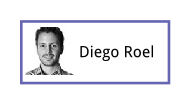

Draw Basic Shapes
Our goal
Scenes are constructed from a set of built-in basic shapes. Let's take a simple, static scene and try to replicate it.

In terms of the Drawing API this scene consists of a path (the violet border), text and an image. We'll also add an enclosing group for positioning.
This is the full code required to render this scene. You'll notice a number of structures that define the position, size and appearance of each element.
We'll go into detail in the following sections.
<div id="surface" style="width: 250px; height: 165px;"></div>
<script>
// Import the Drawing API namespaces
var geom = kendo.geometry;
var draw = kendo.drawing;
// Create the square border by drawing a straight path
var path = new draw.Path({
stroke: {
color: "#9999b6",
width: 2
}
});
// The path is constructed using a chain of commands
path.moveTo(0, 0)
.lineTo(150, 0).lineTo(150, 65).lineTo(0, 65)
.close();
// This rectangle defines the image position and size
var imageRect = new geom.Rect(
new geom.Point(5, 5),
new geom.Size(50, 50)
);
// Create the image
var imageUrl = "http://demos.telerik.com/kendo-ui/content/dataviz/diagram/people/diego.jpg";
var image = new draw.Image(imageUrl, imageRect);
// Create the text
var text = new draw.Text(
"Diego Roel",
new geom.Point(60, 25),
{ font: "bold 15px Arial" }
);
// Place all the shapes in a group
var group = new draw.Group();
group.append(path, image, text);
// Translate the group
group.transform(
geom.transform().translate(50, 50)
);
// Create a drawing surface and render the scene
var surface = draw.Surface.create($("#surface"));
surface.draw(group);
</script>
Walk-through
Import namespaces
We'll start by importing two name spaces:
var geom = kendo.geometry;
var draw = kendo.drawing;
The kendo.geometry namespace contains primitives such as
Point,
Rect and
Size.
Drawing elements such as
Path,
Image and
Group
live in the kendo.drawing namespace.
Draw the path
A Path element is used to draw straight lines, curves or a combination of both.
We'll set the stroke (line) color and width to match the picture:
var path = new draw.Path({
stroke: {
color: "#9999b6",
width: 2
}
});
The configuration object can contain other appearance options as well.
We can now construct the path by issuing commands:
path.moveTo(0, 0)
.lineTo(150, 0).lineTo(150, 65).lineTo(0, 65)
.close();
We set the line initial position with a moveTo command. The three sides are drawn using lineTo commands. The last command closes the path, drawing a straight line to the initial position.
Since this is a rectangle we can use the alternative fromRect static method:
var borderRect = new geom.Rect(
new geom.Point(0, 0),
new geom.Size(150, 65)
);
var path = draw.Path.fromRect(borderRect, {
stroke: {
color: "#9999b6",
width: 2
}
});
Draw the image
The Image element draws a bitmap image from a given URL. The image position and size is defined as a Rect.
var imageRect = new geom.Rect(
new geom.Point(5, 5),
new geom.Size(50, 50)
);
This statement can be shortened to:
var imageRect = new geom.Rect([5, 5], [50, 50]);
Any method that expects Point and Size will also accept [x, y] and [width, height] arrays.
We can now create the image:
var imageUrl = "http://demos.telerik.com/content/dataviz/diagram/people/diego.jpg";
var image = new draw.Image(imageUrl, imageRect);
Draw the text
The Text element draws a single line of text. Appearance options, such as font are set through configuration.
var text = new draw.Text(
"Diego Roel",
new geom.Point(60, 25),
{ font: "bold 15px Arial" }
);
The point defines the position of the top left corner.
Group the shapes
It's often convenient to treat a group of shapes as a single entity. In this case we'll use a group to set the position of all elements at once.
Create a Group element and append the rest of the elements as children:
var group = new draw.Group();
group.append(path, image, text);
A transformation applies to all group children. In this case it's a fairly simple translate. We effectively make the element coordinates relative by translating their parent group.
group.transform(
geom.transform().translate(50, 50)
);
Render the scene
All that is left is to render the scene on the screen. The Surface.create method will choose an implementation that matches the capabilities of the browser:
<div id="surface" style="width: 250px; height: 165px;"></div>
<script>
var surface = draw.Surface.create($("#surface"));
surface.draw(group);
</script>
The default is SVG with fallback to Canvas or VML. See Supported Browsers.